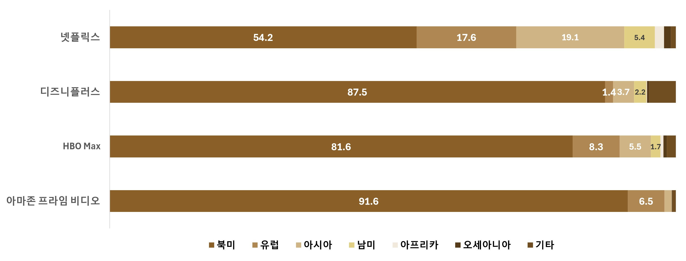
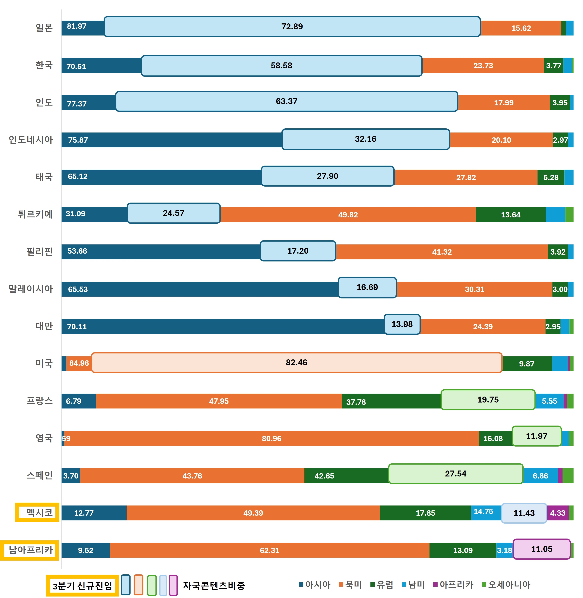
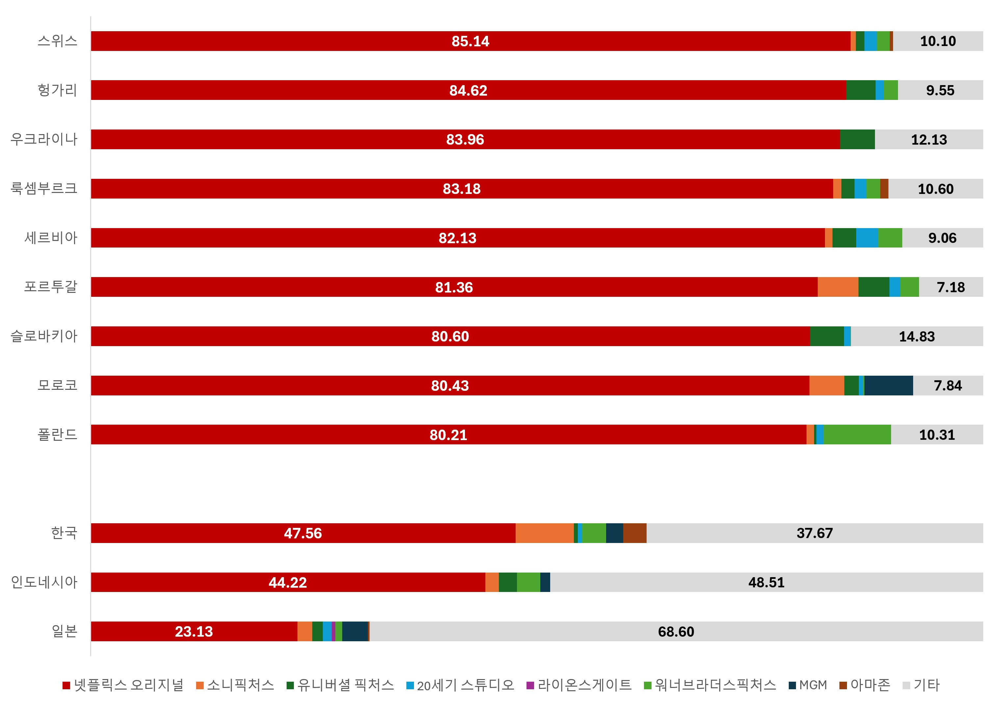
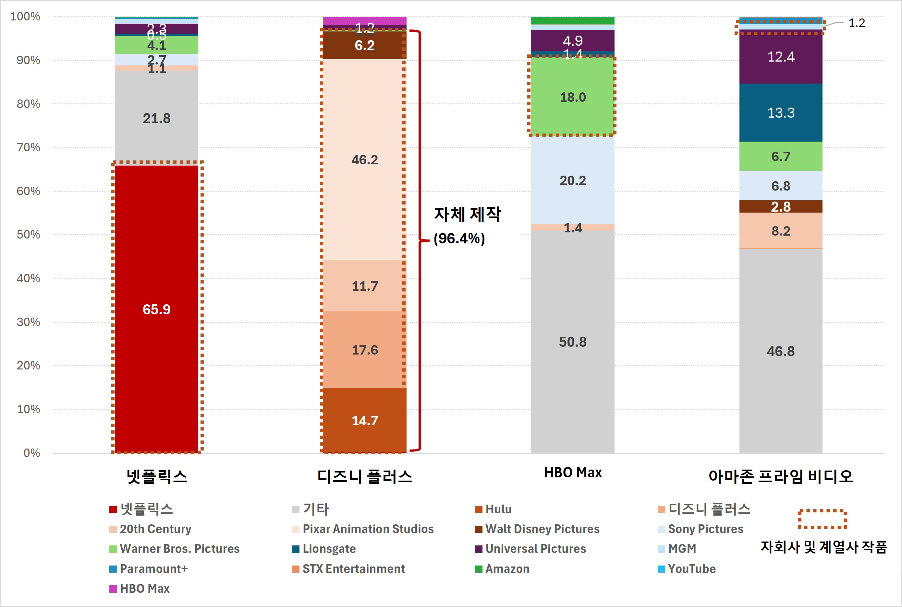

일러두기
⦁
자료 출처: 플릭스패트롤(FlixPatrol, flixpatrol.com)
⦁
자료 수집 시점: 2026년 9월 18일
⦁
분석 기간: 2026년 3분기(2026.7.1.~9.17)
⦁
분석 대상 플랫폼: 넷플릭스(Netflix), 디즈니플러스(Disney+), HBO Max,
아마존 프라임
비디오(Amazon Prime Video)
⦁
선호도 값(preferences, %) 산출 방식: 분석 기간에 각 지역에서 TOP 10에 진입한 모든 콘텐츠를 대상으로 전체 인기점수 중 특정 범주가 차지하는 점수의 합계를 백분율로 환산함
⦁
선호도 값의 해석: % 값이 클수록 해당 지역에서 특정 국가 또는 사업자가 제작한 콘텐츠의 선호가 높음을 의미함
⦁
인기 점수(ranking point, 점) 산출 방식: 매일 특정 일, 주, 월, 연도에 대한 계산이 업데이트되며, 인기 점수는 각 플랫폼이 국가별로 제공하는 TOP 10 순위를 바탕으로 1위 10점, 2위 9점, 3위 8점… 순으로 포인트를 부여한 후 이를 합쳐서 산출함
⦁
본 분석의 지역, 장르 구분: 플릭스패트롤 분류 기준을 적용함
2026년 3분기 넷플릭스, 디즈니플러스, HBO Max, 아마존 프라임 비디오의 권역별 콘텐츠 선호도를 살펴본 결과 여전히 4개 사업자 모두 북미 지역 콘텐츠에 대한 선호도가 가장 높은
것으로 나타났다. 그러나 2분기와 비교하면 넷플릭스의 북미 콘텐츠 선호도는 다소 감소한 반면에 디즈니플러스, HBO Max, 아마존 프라임 비디오는 모두 증가해 북미 콘텐츠 선호 경향이 더욱
강해진 것을 알 수 있다.
개별 플랫폼별로 구체적으로 살펴보면, 먼저 넷플릭스는 북미 지역 콘텐츠 선호도가 54.2%로 지난 2분기 58.2%보다 4%p 감소했다. 대신 남미 콘텐츠 선호도가 5.4%로 2분기
2.4%보다 3%p 증가한 것으로 나타났다. 아시아와 유럽은 각각 17.6%, 19.1%로 지난 분기와 유사한 비중으로 나타났다.
디즈니플러스는 북미 콘텐츠 선호도가 87.5%로 지난 2분기 82.5%보다 5%p가 증가한 것으로 나타났다. 반면에 아시아 콘텐츠 선호도는 지난 2분기 8.0%에서 이번 3분기에는 3.7%로
4.3%p 감소한 것으로 나타났다. 유럽 역시 지난 2분기 3.0%보다 감소한 1.4%로 낮은 비중을 차지하고 있었다.
HBO Max는 북미가 81.6%로 지난 2분기 76.2%보다 5.4%p 증가했으며, 반면에 유럽 콘텐츠에 대한 선호도는 8.3%로 지난 2분기 14.4%보다 6.1%p가 감소한 것으로
나타났다.
아마존 프라임 비디오는 이번 분기 북미 콘텐츠 선호도가 가장 높은 플랫폼으로 91.6%의 비중을 차지한 것으로 나타났다. 이는 2분기 87.6%보다 4%p 증가한 수치다.
전반적으로 2026년 3분기에는 특히 넷플릭스를 제외한 3개 OTT 플랫폼 이용자의 북미 콘텐츠 선호가 더욱 강력해진 가운데, 넷플릭스 이용자의 남미 콘텐츠 선호도의 증가가 특징적으로
나타났다.

[그림 1] 2026년 3분기 글로벌 OTT 사업자의 권역별 콘텐츠 선호도
(출처: 플릭스패트롤 홈페이지 자료 재구성(www.flixpatrol.com))
글로벌 OTT 넷플릭스를 대상으로 2026년 3분기 기준, 국가별 콘텐츠 선호도 가운데 자국 콘텐츠가 차지하는 비중을 분석한 결과 자국 콘텐츠 선호 비중이 10% 이상인 국가는 15개국으로
나타났다. 이 중 9개 국가가 아시아 지역에 분포하고 있으며, 유럽이 3개 국가, 북미, 남미, 아프리카는 각각 1개 국가였다.
자국 콘텐츠 선호 비중이 가장 높은 국가는 82.46%를 차지한 미국이었으며, 다음으로 일본이 72.89%, 인도가 63.37%, 한국이 58.58% 순으로 나타났다. 한편 지난 2분기에
자국 콘텐츠 비중이 10% 미만이었던 멕시코와 남아프리카가 3분기에는 10% 이상 국가 그룹에 새롭게 진입했다. 반면에 지난 1분기와 2분기에 꾸준히 10% 이상의 자국 콘텐츠 비중을 보였던
이탈리아가 올해 3분기에는 10% 미만으로 나타나 집계에서 제외되었다.
한편 넷플릭스 한국의 이용자 선호도를 보면 지난 분기에 비해 아시아 국가 콘텐츠와 자국 콘텐츠 비중 모두 크게 감소하고 있는 것으로 나타났으며, 반면에 북미 콘텐츠 선호가 증가한 것으로
나타났다. 3분기 한국 넷플릭스 이용자의 아시아 지역 콘텐츠 선호도는 70.51%로 2분기 77.9%보다 7.39%p 감소했으며, 한국 콘텐츠 선호 비중도 58.58%로 지난 2분기
68.91%보다 10.33%p 감소하여 큰 차이를 보였다.
아시아에서 자국 콘텐츠 비중이 가장 높은 일본 역시 3분기 아시아 콘텐츠 선호 비중이 81.97%로 2분기 86.38%에 비해 4.41%p 감소한 것으로 나타났다. 반면에 자국 콘텐츠 비중은
72.89%로 2분기 73.24%와 유사하게 나타났다. 북미 콘텐츠 선호 비중은 15.52%로 지난 2분기 11.37%보다 4.15%p가 증가했다.
한편 3분기에는 인도의 아시아 콘텐츠와 자국 콘텐츠 선호 비중이 크게 증가한 것으로 나타났다. 3분기 인도의 아시아 콘텐츠 선호 비중은 77.37%로 지난 2분기 67.24%보다
10.13%p 증가했으며, 자국 콘텐츠 선호 비중 역시 63.37%로 2분기 52.03%보다 11.34%p 증가했다. 반면 인도네시아는 2분기에 비해 아시아 콘텐츠와 자국 콘텐츠 선호 비중이
크게 감소했다. 3분기 인도네시아의 아시아 콘텐츠 선호 비중은 75.87%로 2분기 82.41%보다 6.54%p 감소했으며, 자국 콘텐츠 선호 비중은 3분기에 32.16%로 2분기
48.04%보다 15.88%p나 감소했다. 대신 북미 콘텐츠의 선호 비중은 3분기 20.10%로 2분기 14.91%보다 5.19%p 증가했다.
북미와 유럽은 여전히 미국 콘텐츠에 대한 선호도가 매우 높게 나타났다. 유럽 국가 중 프랑스, 영국, 스페인만 자국 콘텐츠에 대한 선호가 10~30%로 높은 편으로 나타나 아시아 국가와는
대조된다.
한편, 3분기에 멕시코와 남아프리카가 새롭게 자국 콘텐츠 선호 비중 10% 이상 국가로 진입했다. 멕시코와 남아프리카 모두 북미 콘텐츠 선호 비중이 가장 높으며 다음으로 유럽 콘텐츠 선호
비중이 높다. 멕시코의 경우 북미와 유럽 다음으로 높은 남미 콘텐츠 선호 비중이 14.75%인데 이 중 11.43%p가 멕시코 자국 콘텐츠를 선호하는 것으로 나타났다. 남아프리카 역시 북미와
유럽 다음으로 자국 콘텐츠에 대한 선호도가 높아 11.05%를 차지하고 있는 것으로 나타났다.
전반적으로 아시아 국가들은 자국 콘텐츠 선호가 여전히 강세를 보이고 있으나, 3분기에는 전 세계적으로 북미 콘텐츠에 대한 선호가 소폭 증가한 것으로 나타났다. 특히 한국과 인도네시아는 아시아
지역 콘텐츠와 자국 콘텐츠에 대한 선호가 모두 감소하고 있어 이러한 소비 현상이 일시적인 것인지 혹은 로컬 콘텐츠 시장의 양적, 질적 공급과 관련된 부분인지 면밀하게 지켜볼 필요가 있다.

[그림 2] 2026년 3분기 넷플릭스 플랫폼의 국가별 자국 콘텐츠 선호도 (단위: %)
* 자국 콘텐츠 선호 비중이 10% 이상인 국가를 정리함
(출처: 플릭스패트롤 홈페이지 자료 재구성(www.flixpatrol.com))
2026년 3분기 기준 넷플릭스 오리지널 콘텐츠 선호도가 가장 높은 국가는 유럽 국가다. 스위스가 85.14%로 가장 높았으며, 다음으로 헝가리가 84.62%로 뒤를 이었다. 그 외에
우크라이나, 룩셈부르크, 세르비아, 포르투갈, 슬로바키아, 모로코, 폴란드의 넷플릭스 오리지널 콘텐츠 선호 비중이 모두 80% 이상으로 매우 높다. 이와 같은 수치는 지난 2분기 넷플릭스
오리지널 콘텐츠 선호 비중이 80% 이상인 국가가 2개 국가였던 것에 비하면 매우 증가한 것이다.
반면에 일본은 넷플릭스 오리지널 콘텐츠 선호 비중이 23.13%로 가장 낮았다. 로컬 콘텐츠 사업자가 대부분을 차지하는 ‘기타’ 분류 비중을 보면, 일본이 68.60%로 가장 높으며, 이는 2분기
66.21% 보다도 높아진 수치다.
그러나 지난 분기까지 자국에서 제작한 콘텐츠 선호 비중이 50% 이상으로 높았던 한국과 인도네시아는 3분기에 각각 37.67%(2분기 52.06%), 48.51%(2분기 58.20%)로 크게 감소한
것으로 나타났다. 이들 3개 국가의 2026년 3분기 상위 10개 콘텐츠 중 넷플릭스 오리지널이 아닌 콘텐츠를 살펴보면 다음과 같다.
⦁
한국: 2026년 3분기 TV쇼 상위 프로그램 중 넷플릭스 오리지널이 아닌 콘텐츠로 3분기에 10위권에 진입한 프로그램으로는 2022년에 ENA와 SBS Plus가 공동으로 제작하여 편성한 <나는 SOLO, 그 후 사랑은 계속된다>, 2024년에 지니TV와 ENA에서 방영된 <유어 아너>, 현재 SBS에서 제작 방영 중인 <내겐 너무 까칠한 매니저 – 비서진>이 있다. <나는 SOLO, 그 후 사랑은 계속된다>와 <유어 아너>는 최근 방영 프로그램의 화제성으로 과거 작품이 넷플릭스에서 주목받았다.
⦁
인도네시아: 3분기 넷플릭스 차트 상위 콘텐츠 중 넷플릭스 오리지널이 아닌 콘텐츠로는 인도네시아의 첫 요리 범죄 스릴러 시리즈 <마이 셰프 인 크라임(My Chef in Crime)>이 있다. 이 작품은 크레아시아 스튜디오(CreAsia Studio)가 인도네시아 스트리밍 플랫폼 VISION+ 오리지널 드라마로 제작한 드라마다. 크레아시아 스튜디오는 글로벌 대형 제작·배급사인 바니제이 엔터테인먼트(Banijay Entertainment)의 아시아 지사인 바니제이 아시아(Banijay Asia / EndemolShine India)가 동남아시아 시장 확장을 위해 설립한 범지역(Pan-regional) 콘텐츠 제작 스튜디오다. 9월에는 인도네시아 제작사 시네마트(SinemArt)와 EssJay Studios가 공동 제작해 방송사 SCTV에서 방영했던 <유일한 아내(Istri Satu-Satunya)>가 10위권에 진입했다.
⦁
일본: 3분기 넷플릭스 재팬 상위 10위에 진입한 작품의 70-80%는 일본 방송사의 작품이다. 주요 작품을 보면 TBS에서 제작한 스릴러 장르 <티셔츠가 마를 때까지(Until the T-Shirt Dries)>, 2023년에 TBS에서 제작한 <비반트(VIVANT)>, 니혼TV에서 방영된 <고백-25년째 비밀-(25 Years of You)>, TV아사히의 목요드라마 <대공항: GATE24(GATE24: The Borde)> 등이 있다. 애니메이션으로는 아사히 프로덕션이 제작하고 MBS에서 방영된 <슈퍼 뒤에서 담배 피우는 두 사람(Smoking Behind the Supermarket with You)>, <서툰 악녀이긴 합니다만(Though I Am an Inept Villainess)>, 그리고 스튜디오 바인드가 제작한 <무직전생(Mushoku Tensei: Jobless Reincarnation)>이 상위권에 올랐다.
이번 3분기에는 넷플릭스 콘텐츠 중 일본의 로컬 콘텐츠가 선전하고 있는 것으로 나타났다. 특히 지난 분기까지는 일본의 강점인 애니메이션 중심으로 높은 선호를 보였는데, 이번 분기에는 실사 드라마에서도 넷플릭스 플랫폼에서 좋은 성과를 내고 있다.

[그림 3] 2026년 3분기 주요 국가의 넷플릭스 오리지널 콘텐츠 선호 비중 (단위: %)
(출처: 플릭스패트롤 홈페이지 자료 재구성(www.flixpatrol.com))
글로벌 OTT 플랫폼 이용자가 선호한 콘텐츠의 제작사 분포를 살펴보면, 지난 분기와 마찬가지로 넷플릭스는 자체 오리지널 콘텐츠의 비중이 65.9%(2분기 63.7%)로 높게 나타났다. 그러나 M&A를 통해 다수의 제작 분야 자회사를 소유하고 있는 디즈니플러스를 들여다보면 디즈니플러스에서 제작한 콘텐츠 17.6% 외에 사실상 디즈니플러스의 오리지널이라고 할 수 있는 픽사(Pixar Animation Studios, 46.2%), 훌루(Hulu, 14.7%), 20세기사(20th Century Studios, 11.7%), 월트 디즈니 픽쳐스(Walt Disney Pictures, 6.2%)를 합산하면 96.4%를 자체 콘텐츠로 수급하고 있는 셈이다. HBO Max에서는 디스커버리와의 합병으로 자회사로 편입된 워너브라더스 픽쳐스 콘텐츠 비중이 18%였으나, 가장 선호 비중이 높은 것은 20.2%를 차지한 소니 픽처스(Sony Pictures) 콘텐츠다. 아마존 프라임 비디오는 자체 플랫폼의 오리지널보다는 라이온스게이트(Lionsgate)와 유니버셜 픽쳐스(Universal Pictures)와 같은 영화제작사의 선호 비중이 높은 것으로 나타났다.

[그림 4] 2026년 3분기 글로벌 OTT 이용자의 사업자별 콘텐츠 선호도 (단위: %)
(출처: 플릭스패트롤 홈페이지 자료 재구성(www.flixpatrol.com))
2026년 3분기 데이터를 통해 2026년 하반기에 들어 글로벌 OTT 콘텐츠 트렌드가 어떤 변화를 맞고 있는지 살펴보았다. 가장 주목할만한 부분은 일본의 로컬 콘텐츠의 빠른 성장이다. 그동안 애니메이션 중심이었던 로컬 콘텐츠 시장이 실사 드라마의 성장으로 확대되고 있는 모습이 3분기 데이터를 통해 드러나고 있다. 반면에 한국의 로컬 콘텐츠 선호 비중은 계속 감소하고 있고, 양적으로도 기존 방송사의 신규 로컬 콘텐츠 공급이 현저하게 감소하고 있어 관련 시장에 대한 면밀한 분석이 필요할 것으로 보인다.